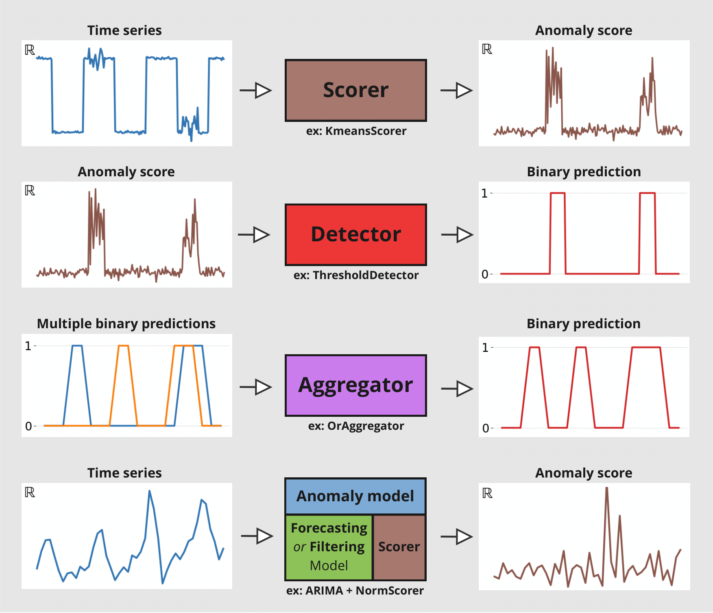
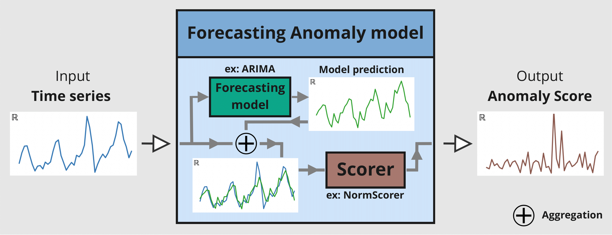

Anomaly Detection in Darts#
This notebook showcases some of the functionalities of Darts’ Anomaly Detection Module. We’ll look at Anomaly Scorers, Detectors, Aggregators and Anomaly Models.
Scorers: compute anomaly scores time series, either only on the target series or between the target series and a forecasted/predicted series. They are the core of the anomaly detection module.Detectors: transform time series (such as anomaly scores) into binary anomaly time series. The presence of an anomaly is flagged with1, and0otherwise.Aggregators: reduce a multivariate binary time series (e.g., where each component represents the anomaly score of a different series component/model) into a univariate binary time series.Anomaly Models: offer a convenient way to produce anomaly scores from any of Darts’ global forecasting models or filtering models by comparing the models’ predictions with actual observations. Each Anomaly Model takes one forecasting/filtering model and one or multiple scorers. The model produces some predictions, which are fed together with the actual series to the scorer(s). It will return anomaly scores for each scorer.
The figure below illustrates the different input/output for each tool:
The notebook is devided into two sections:
How to use
ForecastingAnomalyModelto find anomalies in the number of taxi passengers in New York.How to use an
AnomalyScorerand the importance of its windowing capabilities on two toy datasets.
First, some necessary imports:
import matplotlib.pyplot as plt
%matplotlib inline
import numpy as np
import pandas as pd
from darts import TimeSeries
from darts.ad import (
ForecastingAnomalyModel,
KMeansScorer,
NormScorer,
WassersteinScorer,
)
from darts.ad.utils import (
eval_metric_from_scores,
show_anomalies_from_scores,
)
from darts.dataprocessing.transformers import Scaler
from darts.datasets import TaxiNewYorkDataset
from darts.metrics import mae, rmse
from darts.models import RegressionModel
/Users/dennisbader/miniconda3/envs/darts310_test/lib/python3.10/site-packages/statsforecast/utils.py:237: FutureWarning: 'M' is deprecated and will be removed in a future version, please use 'ME' instead.
"ds": pd.date_range(start="1949-01-01", periods=len(AirPassengers), freq="M"),
Anomaly Model: Taxi passengers in NY#
Load and visualize the data#
Information on the data:
Univariate Time Series (represents the number of taxi passengers in New York)
During a period of 8 months (2014-07 to 2015-01)
Frequency of 30 minutes
In this example, anomalies are subjective. It can be defined as periods where the demand for taxis is abnormal (different than what should be expected). Based on this definition, the following five dates can be considered anomalies:
NYC Marathon - 2014-11-02
Thanksgiving - 2014-11-27
Christmas - 2014-12-24/25
New Years - 2015-01-01
Snow Blizzard - 2015-01-26/27
# load the data
series_taxi = TaxiNewYorkDataset().load()
# define start and end dates for some known anomalies
anomalies_day = {
"NYC Marathon": ("2014-11-02 00:00", "2014-11-02 23:30"),
"Thanksgiving ": ("2014-11-27 00:00", "2014-11-27 23:30"),
"Christmas": ("2014-12-24 00:00", "2014-12-25 23:30"),
"New Years": ("2014-12-31 00:00", "2015-01-01 23:30"),
"Snow Blizzard": ("2015-01-26 00:00", "2015-01-27 23:30"),
}
anomalies_day = {
k: (pd.Timestamp(v[0]), pd.Timestamp(v[1])) for k, v in anomalies_day.items()
}
# create a series with the binary anomaly flags
anomalies = pd.Series([0] * len(series_taxi), index=series_taxi.time_index)
for start, end in anomalies_day.values():
anomalies.loc[(start <= anomalies.index) & (anomalies.index <= end)] = 1.0
series_taxi_anomalies = TimeSeries.from_series(anomalies)
# plot the data and the anomalies
fig, ax = plt.subplots(figsize=(15, 5))
series_taxi.plot(label="Number of taxi passengers", linewidth=1, color="#6464ff")
(series_taxi_anomalies * 10000).plot(label="5 known anomalies", color="r", linewidth=1)
plt.show()
def plot_anom(selected_anomaly, delta_plotted_days):
one_day = series_taxi.freq * 24 * 2
anomaly_date = anomalies_day[selected_anomaly][0]
start_timestamp = anomaly_date - delta_plotted_days * one_day
end_timestamp = anomaly_date + (delta_plotted_days + 1) * one_day
series_taxi[start_timestamp:end_timestamp].plot(
label="Number of taxi passengers", color="#6464ff", linewidth=0.8
)
(series_taxi_anomalies[start_timestamp:end_timestamp] * 10000).plot(
label="Known anomaly", color="r", linewidth=0.8
)
plt.title(selected_anomaly)
plt.show()
for anom_name in anomalies_day:
plot_anom(anom_name, 3)
break # remove this to see all anomalies
The goal would be to detect these five irregular periods and identify other possible abnormal days.
Train a Darts forecasting model#
We will use a RegressionModel to predict the number of taxi passengers. The first 4500 timestamps will be used to train the model. The training set is considered to be anomaly-free, the five considered anomalies are located after the 4500th timestamps. The number of lags is set to 1 week, assuming the demand follows a periodicity of 1 week. To help the model, additional information on the targeted series is passed as covariates (the hour and the day of the week).
# split the data in a training and testing set
s_taxi_train = series_taxi[:4500]
s_taxi_test = series_taxi[4500:]
# Add covariates (hour and day of the week)
add_encoders = {
"cyclic": {"future": ["hour", "dayofweek"]},
}
# one week corresponds to (7 days * 24 hours * 2) of 30 minutes
one_week = 7 * 24 * 2
forecasting_model = RegressionModel(
lags=one_week,
lags_future_covariates=[0],
output_chunk_length=1,
add_encoders=add_encoders,
)
forecasting_model.fit(s_taxi_train)
RegressionModel(lags=336, lags_past_covariates=None, lags_future_covariates=[0], output_chunk_length=1, output_chunk_shift=0, add_encoders={'cyclic': {'future': ['hour', 'dayofweek']}}, model=None, multi_models=True, use_static_covariates=True)
Use a Forecasting Anomaly Model#
The anomaly model consists of two inputs:
a fitted
GlobalForecastingModel(you can find a list here. If the model hasn’t been fitted, set parameterallow_model_trainingtoTruewhen callingfit())a single or list of
AnomalyScorer(trainable or not)
For this example, three scorers will be used:
NormScorer(window is by default set to 1)WassersteinScorerwith a half-day window (24 timestamps) and no window aggregationWassersteinScorerwith a full-day window (48 timestamps) including window aggregation
The window parameter is an integer value indicating the window size used by the scorer to transform the series into an anomaly score. A scorer will slice the given series into subsequences of size W and returns a value indicating how anomalous these subset of W values are.
The window_agg can be used to transform the window-wise scores into point-wise scores by aggregating all anomaly scores from each window that the point was included in.
The following figure illustrates the mechanism of a Forecasting Anomaly model:
Using the main functions: fit(), score(), eval_metric() and show_anomalies()#
# with timestamps of 30 minutes
half_a_day = 2 * 12
full_day = 2 * 24
# instantiate the anomaly model with: one fitted model, and 3 scorers
anomaly_model = ForecastingAnomalyModel(
model=forecasting_model,
scorer=[
NormScorer(ord=1),
WassersteinScorer(window=half_a_day, window_agg=False),
WassersteinScorer(window=full_day, window_agg=True),
],
)
Now let’s train the anomaly model with fit(). In sequence it will:
fit the forecasting model on the given series if it has not been fitted yet and
allow_model_training=True.generate historical forecasts for the given series.
feed the historical forecasts to each fittable/trainable scorer:
compute the differences between the forecasts and the given series (controled by the scorers
diff_fn, see Darts “per time step” metrics here)train the scorer on these differences
You can control how the historical forecasts are generated when calling fit() (the supported parameters are here).
START = 0.1
anomaly_model.fit(s_taxi_train, start=START, allow_model_training=False, verbose=True)
<darts.ad.anomaly_model.forecasting_am.ForecastingAnomalyModel at 0x2905d0130>
We call the function score() to compute the anomaly scores of a new series s_taxi_test. It returns the scores from each scorer in the anomaly model. We will use the results in the next section. With return_model_prediction=True, we can additionally get the historical forecasts generated by the forecasting model.
anomaly_scores, model_forecasting = anomaly_model.score(
s_taxi_test, start=START, return_model_prediction=True, verbose=True
)
pred_start = model_forecasting.start_time()
# compute the MAE and RMSE on the test set
print(
f"On testing set -> MAE: {mae(model_forecasting, s_taxi_test)}, RMSE: {rmse(model_forecasting, s_taxi_test)}"
)
# plot the data and the anomalies
fig, ax = plt.subplots(figsize=(15, 5))
s_taxi_test.plot(label="Number of taxi passengers")
model_forecasting.plot(label="Prediction of the model", linewidth=0.9)
plt.show()
On testing set -> MAE: 595.190366262045, RMSE: 896.6287614972252
To evaluate the anomaly model, we call the function eval_metric(). It outputs the score of an agnostic threshold metric (“AUC-ROC” or “AUC-PR”), between the predicted anomaly score time series and some known binary ground-truth time series indicating the presence of actual anomalies.
It will return a dictionary containing the name of the scorer and its score.
metric_names = ["AUC_ROC", "AUC_PR"]
metric_data = []
for metric_name in metric_names:
metric_data.append(
anomaly_model.eval_metric(
anomalies=series_taxi_anomalies,
series=s_taxi_test,
start=START,
metric=metric_name,
)
)
pd.DataFrame(data=metric_data, index=metric_names).T
| AUC_ROC | AUC_PR | |
|---|---|---|
| Norm (ord=1)_w=1 | 0.658074 | 0.215601 |
| WassersteinScorer_w=24 | 0.884915 | 0.609469 |
| WassersteinScorer_w=48 | 0.950035 | 0.687788 |
We can see that the anomaly model, using the WassersteinScorer, can separate the abnormal days from the normal ones. The AUC ROC is above 0.9. Additionally, a window of size 48 timestamps (24 hours) is a better option than a window of size 24 timestamps (12 hours).
We call the function show_anomalies() to visualize the results. It plots the forecasts, predicted scores, the input series, and the actual anomalies (if provided). The scorers with different windows will be separated. It is possible to compute a metric that will be shown next to the scorer’s name.
anomaly_model.show_anomalies(
series=s_taxi_test,
anomalies=series_taxi_anomalies[pred_start:],
start=START,
metric="AUC_ROC",
)
Convert an anomaly score to a binary prediction with a Detector#
Darts’ Anomaly Detectors convert anomaly scores into binary anomlies/predictions. In this example, we’ll use the QuantileDetector.
It detects anomalies based on the quantile values (high_quantile and/or low_quantile) of historical data. It flags times as anomalous when the values exceed these quantile thresholds. In this example, the anomaly scores were computed for the absolute residuals of the model. It is lower-bound by 0. We set low_quantile=None (default), as we only want to flag values above high_quantile.
We set high_quantile to 0.95. This value must be chosen carefully, as it will convert the (1- high_quantile) * 100 % biggest anomaly scores into a prediction of anomalies. In our case, we want to see the 5% most anomalous timestamps.
Note: You can also use
ThresholdDetectorto define some fixed value thresholds for anomaly detection
from darts.ad.detectors import QuantileDetector
contamination = 0.95
detector = QuantileDetector(high_quantile=contamination)
# use the anomaly score that gave the best AUC ROC score: Wasserstein anomaly score with a window of 'full_day'
best_anomaly_score = anomaly_scores[-1]
# fit and detect on the anomaly scores, it will return a binary prediction
anomaly_pred = detector.fit_detect(series=best_anomaly_score)
# plot the binary prediction
fig, (ax1, ax2) = plt.subplots(nrows=2, sharex=True)
anomaly_pred.plot(label="Prediction", ax=ax1)
series_taxi_anomalies[anomaly_pred.start_time() :].plot(
label="Known anomalies", ax=ax2, color="red"
)
fig.tight_layout()
for metric_name in ["accuracy", "precision", "recall", "f1"]:
metric_val = detector.eval_metric(
pred_scores=best_anomaly_score,
anomalies=series_taxi_anomalies,
window=full_day,
metric=metric_name,
)
print(metric_name + f": {metric_val:.2f}/1")
accuracy: 0.91/1
precision: 0.76/1
recall: 0.32/1
f1: 0.45/1
Using the functions show_anomalies_from_scores(), eval_metric_from_scores()#
Internally, methods eval_metric() and show_anomalies() call eval_metric_from_scores() and show_anomalies_from_scores(), respectively. We can also call them directly with pre-computed anomaly scores to avoid having to re-generate the scores each time.
Let’s reproduce the results from above. Both functions require the window sizes used to compute each of the anomaly scores. In our case, the window sizes were 1, 24 (half_a_day), 48 (full_day).
windows = [1, half_a_day, full_day]
scorer_names = [f"{scorer}_{w}" for scorer, w in zip(anomaly_model.scorers, windows)]
metric_data = {"AUC_ROC": [], "AUC_PR": []}
for metric_name in metric_data:
metric_data[metric_name] = eval_metric_from_scores(
anomalies=series_taxi_anomalies,
pred_scores=anomaly_scores,
window=windows,
metric=metric_name,
)
pd.DataFrame(index=scorer_names, data=metric_data)
| AUC_ROC | AUC_PR | |
|---|---|---|
| Norm (ord=1)_1 | 0.658074 | 0.215601 |
| WassersteinScorer_24 | 0.884915 | 0.609469 |
| WassersteinScorer_48 | 0.950035 | 0.687788 |
As expected, the AUC ROC and AUC PR values are identical to before.
For visualizing the anomalies:
if we want to compute a metric, we need to specify the window sizes as well
optionally, we can indicate the scorers’ names that generated the scores
show_anomalies_from_scores(
series=s_taxi_test,
anomalies=series_taxi_anomalies[pred_start:],
pred_scores=anomaly_scores,
pred_series=model_forecasting,
window=windows,
title="Anomaly results using a forecasting method",
names_of_scorers=scorer_names,
metric="AUC_ROC",
)
A zoom on each anomalies: visualize the results#
def plot_anom_eval(selected_anomaly, delta_plotted_days):
one_day = series_taxi.freq * 24 * 2
anomaly_date = anomalies_day[selected_anomaly][0]
start = anomaly_date - one_day * delta_plotted_days
end = anomaly_date + one_day * (delta_plotted_days + 1)
# input series and forecasts
series_taxi[start:end].plot(
label="Number of taxi passengers", color="#6464ff", linewidth=0.8
)
model_forecasting[start:end].plot(
label="Model prediction", color="green", linewidth=0.8
)
# actual anomalies and predicted scores
(series_taxi_anomalies[start:end] * 10000).plot(
label="Known anomaly", color="r", linewidth=0.8
)
# Scaler transforms scores into a value range between (0, 1)
(Scaler().fit_transform(best_anomaly_score)[start:end] * 10000).plot(
label="Anomaly score", color="black", linewidth=0.8
)
plt.legend(loc="upper center", ncols=2)
plt.title(selected_anomaly)
fig.tight_layout()
plt.show()
for anom_name in anomalies_day:
plot_anom_eval(anom_name, 3)
break # remove this to see all anomalies